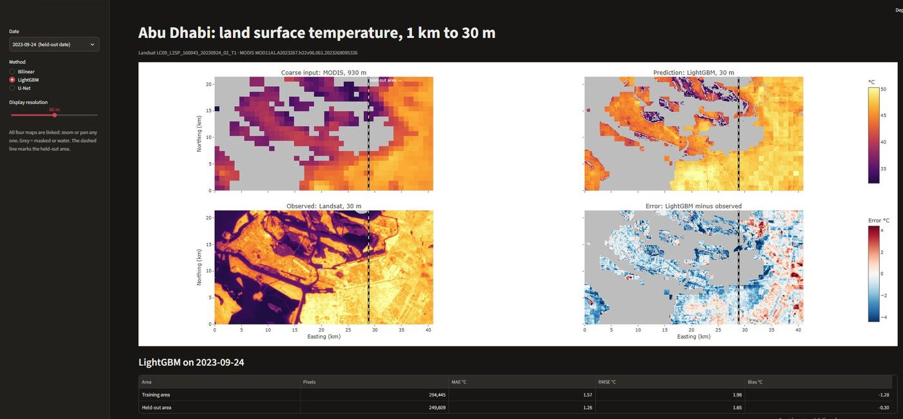

Urban Heat Downscaling
Can daily 1 km satellite temperature be sharpened to 30 m?
PythonLightGBMPyTorch U-NetxarrayZarrRasterioSTACStreamlit
github.com/SaraEwaida/Urban-Heat-Downscaling
MODIS sees land surface temperature every day at about 1 km; Landsat sees it at 30 m but only every 8 to 16 days. I aligned eight dates of MODIS, Landsat, NDVI, ESA WorldCover and Copernicus DEM for Abu Dhabi on one 30 m grid in Zarr, then compared bilinear interpolation, a LightGBM residual model and a U-Net, all scored on a held-out area, held-out dates, and both.
6.1 → 1.6
MAE in °C on the held-out area, bilinear to LightGBM
±0.7
bias in °C on every held-out split, down from 4 to 9 °C cold
2.1
U-Net MAE on the new area: neighbourhood patterns transferred worse than per-pixel features

- Splits fixed before any model was fitted; U-Net patches cut inside each split, normalisation fitted on training pixels only, with a test that proves it.
- Found that MODIS gaps were water, not cloud, and that Terra passes about 50 minutes before Landsat, which shapes the offset the models must learn.